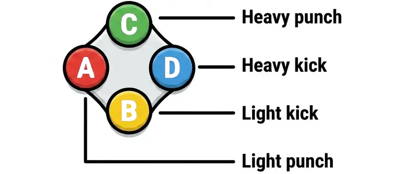

Select a character from the roster list.
System
How to play
Everything you need to begin.
Controls
Breakers is mostly played on a square button layout:

Throw
Use Forward/Back + C to Throw.
It's a powerful option since there's no throw tech. It's also effective for breaking jump-in combos. Certain characters have additional throw inputs and air throws.
Combos & Supers
Breakers gives you many cancel options and plenty of ways to juggle into Supers, helped by a generous input buffer. Every action builds your gauge up to three bars, and each Super spends one bar.
Back roll
After a non-super hit, press 3 buttons while knocked down to do a back-roll. This can help you defend against strong okizeme setups.
Dashes
All characters (except for Condor) can dash by tapping forward or back twice. Some characters have backdash invincibility and dash‑cancels, giving them enhanced mobility options.
Dizzy
Taking repeated hits will leave you dizzy. While stunned, mash directions and buttons to recover faster. The recovery animation grants a brief window of invincibility.
Chip damage
Blocking causes chip damage, and you can even get KO’d from it. Use special moves to finish with chip, since Supers do very little chip damage.
Break
Interrupt combos with a throw, invincible backdash, or reversal. This works best against close-range attacks and jump-ins. Use breakable combos for more damage against unaware opponents, and unbreakable combos when you want a safer option.
Risk system
The risk system refers to comebacks mechanics :
🔺 ATK+DEF boost under 2/3 life. The healthier player takes more damage until both life bars are equal.
🔺 DMG boost by waiting, up to double damage on your next hit.
🔺 Winner takes extra DMG, loser gains DEF boost. These effects stack with each win.
Practice
Training mode
Learn inputs, test ideas, and get comfortable with the game.

The easiest way to practice Breakers is by using Fightcade, which runs FBNeo and a Lua script that adds features like hitboxes, input display, recording, playback, and dummy behavior.
Requirements
- Fightcade: Download from the official site and create an account
- Breakers Revenge ROM (You’ll have to find it yourself and get it working).
How to start
- Join the Breakers Revenge room in Fightcade.
- Click the TRAINING Button on the top right.
- The game starts automatically with the training mode enabled.
- Mapping: Set your controls in Input > Map Game Inputs.
- Access the training menu: Hold Coin to open the menu.
- Hide hitboxes: At the character select, open the training menu then set hitboxes to OFF.
- Offline training: Launch the game in fcadefbneo.exe, then open Game > Lua Scripting… > Fightcade Training Mode.
Recording Options
Record either P1 or P2 (default) in the training menu to practice against specific setups.
During playback, the recorded character acts automatically while you control the other player.
- Press Coin 3 times (you'll see a red indicator at the top left of the screen).
- Perform the move you want to record then Press Coin to stop.
- Finally, Press coin To play your recorded inputs.
Example: Record an action where Player 2 finishes with a low guard (to test if the move is safe).
Guide
Characters
Select a character to view data, move list, strategy and matchup tips.
Info
Breakers wiki
About
Breakerswiki helps you learn the basics with gameplay, characters guide and matchup tips.
Get Involved
Want to contribute to the wiki ? Feel free to Get in touch or Submit a request
Discord
Join our community on Discord to discuss strategies, share content, and connect with other fans!
Resources
Special Thanks
Special thanks to the Breakers community who made all collected information in this wiki possible.